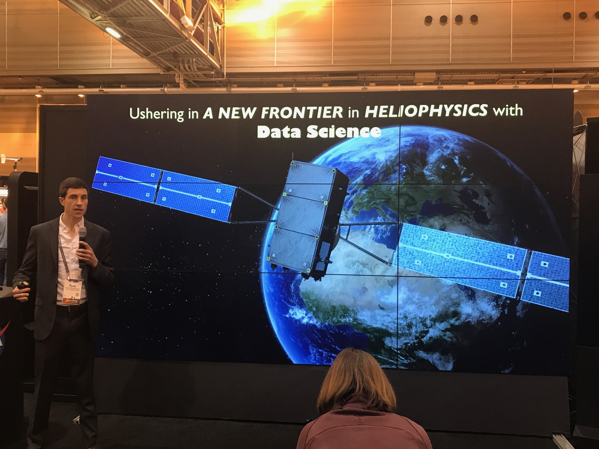
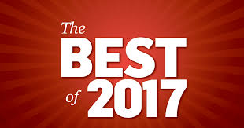
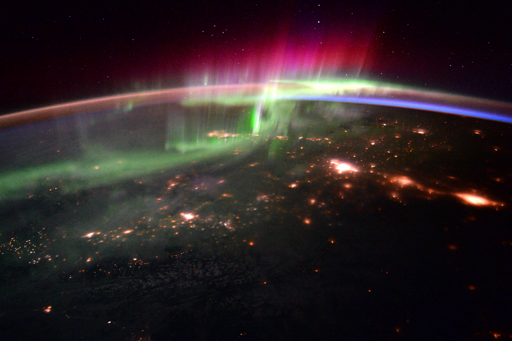

Posted on December 30, 2022
This blog site is not regularly maintained, but I do write and attempt to use writing together as a way to explore healthy relationality. You can find some of that writing and join the community at the Substack newsletter, The Flourishing Commons. Talk to you there!
Posted on September 30, 2018 at 9:24 PM
Data analytics (i.e., new approaches of data exploration, sophisticated statistical analysis, and Machine Learning) is the vehicle of innovation for disciplines across the spectrum from business to engineering, from science to art. Literacy in these techniques is a skill that all employers and projects require to the point that a new profession has emerged to support the growing demand: the data scientist. In January 2018 data science was named the ‘best job in America’, a recognition that it has now received three years running. Despite the explosion in importance and popularity, the Mckinsey Global Institute estimates that there is a 50% gap between data scientist supply and demand.
Machine Learning understanding and capabilities are fundamental skills of data scientists. I’m passionately attempting to bring together data science with the Earth and Space Sciences, and am, therefore, crafting materials to introduce those from these disciplines who are not necessarily well versed in standard data science skills.
Part one of this series is an introduction to neural networks. I presented this material during a presentation at NASA and have made it freely and openly available on my GitHub site. At that link you will find the brief, high-level introduction to neural networks, and will be able to download the figures and the Jupyter Notebook script to step through explanations of neural network architecture and to develop an intuition for their operation.
Within the interactive notebook script you will find links to several other useful resources.
I hope this will allow you to discover the basics of neural networks and provide direction for you to further your understanding, apply Machine Learning, and embrace data science.
Posted on January 6, 2017 at 9:00 PM
The world famous(!) NASA Hyperwall is more than just a Powerpoint presentation.
A Hyperwall presentation is a collision of captivating science stories and state-of-the-art data visualization. It’s professional show & tell. A forum for engaging the public in compelling science and opening a jargon-free dialogue between expert and layperson. (See more about the Hyperwall here)
I had the good fortune to be selected to give a Hyperwall talk at the American Geophysical Union (AGU) 2017 Fall Meeting and used that stage to speak to a topic near and dear to my heart and one that inspires me every day: Ushering in a New Frontier in Heliophysics with Data Science.
We are at a unique time in the study of our place in space. On one hand, we operate in the same paradigm that has guided the study of Heliophyics (the physics of our interaction with the Sun) for the past couple of decades, and on the other a rising dependence of our economic and social well-being on the space around us demands a shift. Everywhere in our society increased data volume and the advent of sophisticated and efficient methods to explore these data (i.e., data science) present new opportunities for discovery, and the time is ripe for these methods to shift how we study of the physics of space.
In this talk, I shed light on the solar-terrestrial connection, or space weather. I took the audience on a visual tour of the vast space weather system, extending from the Sun, through interplanetary space, to the Earth’s magnetosphere and upper atmosphere, and illustrated its complex and coupled nature. The presentation then turned to the effects of space weather on each of us, and its heightened importance in the digital age.
I set out to provide an understanding of space weather and inspire a passion for its study with cutting edge data-driven tools. This is my passion, and, I believe, a profound opportunity for our society to create a new frontier in the study of our interaction with the sun - a new frontier at the intersection of existing understanding and future innovation.
Posted on January 1, 2017 at 8:45 PM
Happy New Year!
Oh what a year it has been! Have we seen it all in 2017? Seems like we may have - the good (link), the bad (link), the very very ugly (link). We can’t possibly get into everything here, but we can talk about one of my all-time favorite things - year end lists. Is there anything better than looking back and figuring out the nuggets that spoke more clearly to you, elicited a more visceral response and emotional connection, and remained more present with you for an entire year than anything else? I also love revisiting those items and reflecting on how my interaction with them is different now than it was when I first encountered them. It feels like a conversation with myself about how I’ve grown over the year.
Here are three conversations I have had with myself in the form of best of lists as 2017 draws to a close.
It’s been a year of raw, introspective music, with many bands returning to the music scene with new albums full of self-evaluation and confrontation of personal demons. From Robin Pecknold’s exploration of self-doubt on Crack Up to the National’s dive into abandon and quiet contemplation on Sleep Well Beast, it was a thought-provoking year in music (If you know me at all, you know I believe Pecknold and the National’s Matt Berninger can do no wrong). On top of that the sheer quantity of music to ingest this year was completely overwhelming. Grab a cup of coffee, or something much stronger, and sit down with these five gems for a bit. (These blurbs are not particularly well written, but are an attempt to very briefly capture the emotion that I felt when spinning these records in 2017 - I hope it resonates with you and inspires you to contemplate how you interact with this wonderful music)
It’s worth mentioning that one of the most disappointing albums of the year, given what we have come to expect from them, was Arcade Fire’s Everything Now.
These people are all profoundly incredible, thought-provoking, and are contributing to making this a world I’m excited to be a part of while there is so much going on that make it one I’m terrified of. I won’t say more about them other than to plead with you to spend some time getting to know these wonderful perspectives and their work.
Posted on June 3, 2016 at 3:00 PM
Hi everyone
I wanted to pass along a quick note about a recent effort of mine to increase public awareness of the space sciences and the importance of studying heliophysics. I spoke about heliophysics, colloquially known as space weather, at the Ignite Boulder 29 event on May 19, 2016 (Ignite Boulder 29). You can see the talk here.
Our technologically dependent society is increasingly susceptible to the adverse effects of space weather, which makes it critical that we understand, and ultimately be able to predict, this weather. Such efforts are gaining recognition on the national and political stages, as evidenced by the release of a Space Weather Action Plan by the Executive Office of the President late last year. If you are interested in learning more about space weather research please check out the NASA Heliophysics Division or NOAA Space Weather Prediction Center websites.
The Boulder, Colorado weekly newspaper, The Boulder Weekly, published a piece on my talk and space weather in general. You can see the article here.